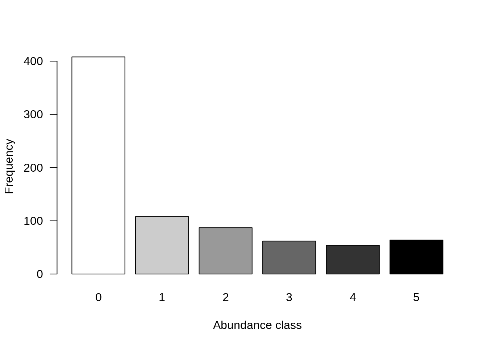
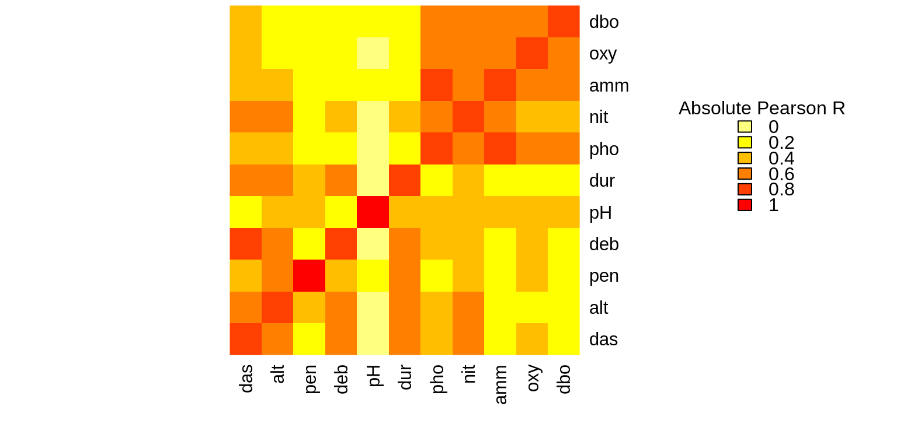

Chapter 4 Exploring the Doubs River dataset
We will be using the Doubs River dataset (Verneaux 1973) for this workshop.
DoubsSpe.csvis a data frame of fish community data where the first column contains site names from 1 to 30 and the remaining columns are fish taxa (27 species). The taxa columns are populated by fish abundance data (counts).DoubsEnv.csvis a data frame of environmental data for the same sites contained in the fish community data frame. Again, the first column contains site names from 1 to 30. The remaining columns contain measurements for 11 abiotic variables.Note that most functions for ordination analyses expect data to be in wide format.
# Make sure the files are in your working directory! If R
# cannot find the dataset, set your working directory with
# setwd() to the folder in which your data is stored (e.g.
# setwd('~/Desktop/workshop10'))
# Species community data frame (fish abundance)
spe <- read.csv("data/doubsspe.csv", row.names = 1)
spe <- spe[-8, ] # Site number 8 contains no species, so we remove row 8 (site 8)
# Be careful to only run this command line once as you are
# overwriting 'spe' each time!
# Environmental data frame: “DoubsEnv.csv”
env <- read.csv("data/doubsenv.csv", row.names = 1)
env <- env[-8, ] # Remove corresponding abiotic data for site 8 (because removed from fish data).
# Again, be careful to only run the last line once.4.1 Exploring the fish community dataset
We can begin by using summary functions to explore the spe data (fish community data), and get familiar with its dimensions, structure, column headings and some summary statistics. This is a review from Workshop 2.
We can begin by getting a general overview of the matrix:
## [1] "CHA" "TRU" "VAI" "LOC" "OMB" "BLA" "HOT" "TOX" "VAN" "CHE" "BAR" "SPI"
## [13] "GOU" "BRO" "PER" "BOU" "PSO" "ROT" "CAR" "TAN" "BCO" "PCH" "GRE" "GAR"
## [25] "BBO" "ABL" "ANG"## [1] 29 27## CHA TRU VAI LOC OMB BLA HOT TOX VAN CHE BAR SPI GOU BRO PER BOU PSO ROT CAR
## 1 0 3 0 0 0 0 0 0 0 0 0 0 0 0 0 0 0 0 0
## 2 0 5 4 3 0 0 0 0 0 0 0 0 0 0 0 0 0 0 0
## 3 0 5 5 5 0 0 0 0 0 0 0 0 0 1 0 0 0 0 0
## 4 0 4 5 5 0 0 0 0 0 1 0 0 1 2 2 0 0 0 0
## 5 0 2 3 2 0 0 0 0 5 2 0 0 2 4 4 0 0 2 0
## 6 0 3 4 5 0 0 0 0 1 2 0 0 1 1 1 0 0 0 0
## TAN BCO PCH GRE GAR BBO ABL ANG
## 1 0 0 0 0 0 0 0 0
## 2 0 0 0 0 0 0 0 0
## 3 0 0 0 0 0 0 0 0
## 4 1 0 0 0 0 0 0 0
## 5 3 0 0 0 5 0 0 0
## 6 2 0 0 0 1 0 0 0Then, we can look a little more closely at the objects in the matrix, which are the species in this case:
str(spe) # structure of objects in dataset
summary(spe) # summary statistics for all objects (min, mean, max, etc.)It is also a good idea to take a quick look at how the community is structured by plotting the distribution of species’ abundances in the dataset.
# Count number of species frequencies in each abundance class
ab <- table(unlist(spe))
# Plot distribution of species frequencies
barplot(ab, las = 1, # make axis labels perpendicular to axis
xlab = "Abundance class", ylab = "Frequency", # label axes
col = grey(5:0/5)) # 5-colour gradient for the bars
You might notice that there are a lot of zeros in the abundance data.
How many zeros are in the dataset?
## [1] 408What proportion of the dataset does that represent?
## [1] 0.5210728Over 50% of our dataset consists of zeros! This is high, but not uncommon for species abundance data. However, many zeros can lead to a double zero problem, where common absences artificially increase the similarity between sites, in terms of their community composition. In other words, two sites might appear more similar just because they are both missing a species, even though a common absence does not make them ecologically similar. Instead, we want common presences to determine site similarity.
To avoid this double zero problem, we will apply a transformation to the species data. Legendre and Gallagher (2001) proposed five pre-transformations of the species data, four of which are available in the decostand() function from the vegan package.
The Hellinger transformation expresses abundances as the square-root of their relative abundance at each site (Borcard, Gillet, and Legendre 2011), solving the issue with double zeros. We will apply this transformation to the fish abundance dataset.
4.2 Exploring the environmental dataset
Now, let us get some familiarity with the abiotic environmental variables measured at the same sites. First, we can explore the matrix using the same function we used above.
## [1] "das" "alt" "pen" "deb" "pH" "dur" "pho" "nit" "amm" "oxy" "dbo"## [1] 29 11## das alt pen deb pH dur pho nit amm oxy dbo
## 1 0.3 934 48.0 0.84 7.9 45 0.01 0.20 0.00 12.2 2.7
## 2 2.2 932 3.0 1.00 8.0 40 0.02 0.20 0.10 10.3 1.9
## 3 10.2 914 3.7 1.80 8.3 52 0.05 0.22 0.05 10.5 3.5
## 4 18.5 854 3.2 2.53 8.0 72 0.10 0.21 0.00 11.0 1.3
## 5 21.5 849 2.3 2.64 8.1 84 0.38 0.52 0.20 8.0 6.2
## 6 32.4 846 3.2 2.86 7.9 60 0.20 0.15 0.00 10.2 5.3We can then look a little closer at the objects, which are the environmental variables in this case.
4.2.1 Collinearity
It is also a good idea to check for correlations between variables, as the constrained ordination methods we will be using are highly sensitive to collinearities in the explanatory matrix. This means a variable might appear to be highly important just because it was treated first in the analysis if it is highly correlated with one or more other variables that help to explain the response variable.
# We can visually look for correlations between variables:
heatmap(abs(cor(env)),
# Compute pearson correlation (note they are absolute values)
col = rev(heat.colors(6)),
Colv = NA, Rowv = NA)
legend("topright",
title = "Absolute Pearson R",
legend = round(seq(0,1, length.out = 6),1),
y.intersp = 0.7, bty = "n",
fill = rev(heat.colors(6)))
Some variables look correlated… For example, das is highly correlated with alt, deb, dur, nit, among others!
4.2.2 Standardizing the environmental variables
You cannot compare the effects of variables with different units. For example, a variable measured in millimeters would appear more important than if it were measured in meters, simple because the value is larger (e.g. 1000 millimeters vs. 1 meter). Standardizing variables with different units is therefore crucial.
In this dataset, the environmental data are all in different units and will therefore need to be standardized prior to performing any ordinations. We can once again use the decostand() function to standardize the environmental variables.
# Scale and center variables
env.z <- decostand(env, method = "standardize")
# Variables are now centered around a mean of 0
round(apply(env.z, 2, mean), 1)## das alt pen deb pH dur pho nit amm oxy dbo
## 0 0 0 0 0 0 0 0 0 0 0## das alt pen deb pH dur pho nit amm oxy dbo
## 1 1 1 1 1 1 1 1 1 1 1References
Borcard, Daniel, François Gillet, and Pierre Legendre. 2011. Numerical Ecology with R. Use R! New York: Springer-Verlag. https://doi.org/10.1007/978-1-4419-7976-6.
Legendre, Pierre, and Eugene D. Gallagher. 2001. “Ecologically Meaningful Transformations for Ordination of Species Data.” Oecologia 129 (2): 271–80. https://doi.org/10.1007/s004420100716.
Verneaux, J. 1973. In, Thèse d’état:257. Essai de Biotypologie. Besançon.